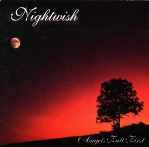
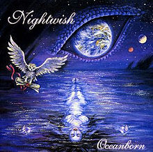
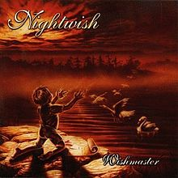
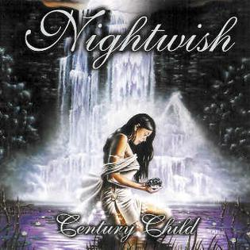
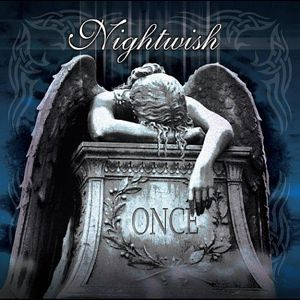
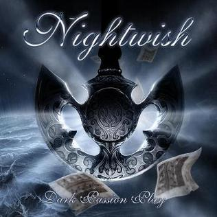
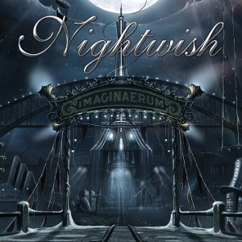

Studio Albums
Angels Fall First
Track list:
1. "Elvenpath" 4:402. "Beauty and the Beast" 6:22
3. "The Carpenter" 5:57
4. "Astral Romance" 5:12
5. "Angels Fall First" 5:34
6. "Tutankhamen" 5:31
7. "Nymphomaniac Fantasia" 4:47
8. "Know Why the Nightingale Sings" 4:14
9. "Lappi (Lapland)" 9:20
Bonus tracks:
10. "A Return to the Sea" 5:4611. "Once upon a Troubadour" 5:21

Oceanborn
Track list:
1. "Stargazers" 4:282. "Gethsemane" 5:22
3. "Devil & the Deep Dark Ocean" 4:46
4. "Sacrament of Wilderness" 4:12
5. "Passion and the Opera" 4:50
6. "Swanheart" 4:44
7. "Moondance" 3:31
8. "The Riddler" 5:16
9. "The Pharaoh Sails to Orion" 6:26
10. "Walking in the Air" 5:31
12. "A Return to the Sea" 5:50
13. "Sleeping Sun" 4:02
Bonus tracks:
11. "Nightquest" 4:1712. "A Return to the Sea" 5:50
13. "Sleeping Sun" 4:02

Wishmaster
Track list:
1. "She Is My Sin" 4:462. "The Kinslayer" 3:59
3. "Come Cover Me" 4:34
4. "Wanderlust" 4:50
5. "Two for Tragedy" 3:50
6. "Wishmaster" 4:24
7. "Bare Grace Misery" 3:39
8. "Crownless" 4:25
9. "Deep Silent Complete" 3:57
10. "Dead Boy's Poem" 6:47
11. "FantasMic" 8:17
11. "FantasMic" 8:17
Bonus tracks:
12. "Sleepwalker" 2:55

Century Child
Track list:
1. "Bless the Child" 6:122. "End of All Hope" 3:45
3. "Dead to the World" 4:19
4. "Ever Dream" 4:43
5. "Slaying the Dreamer" 4:31
6. "Forever Yours" 3:51
7. "Ocean Soul" 4:14
8. "Feel for You" 3:54
9. "The Phantom of the Opera" 4:10
10. "Beauty of the Beast"
Bonus tracks:
11. "The Wayfarer" 3:25

Once
Track list:
1. "Dark Chest of Wonders" 4:292. "Wish I Had an Angel" 4:06
3. "Nemo" 4:36
4. "Planet Hell" 4:36
5. "Creek Mary's Blood" 8:30
6. "The Siren" 4:45
7. "Dead Gardens" 4:28
8. "Romanticide" 4:58
9. "Ghost Love Score" 10:02
10. "Kuolema Tekee Taiteilijan" 3:59
11. "Higher Than Hope" 5:37
13. "Live to Tell the Tale" 4:58
14. "Where Were You Last Night" 3:52
11. "Higher Than Hope" 5:37
Bonus tracks:
12. "White Night Fantasy" 4:0513. "Live to Tell the Tale" 4:58
14. "Where Were You Last Night" 3:52

Dark Passion Play
Track list:
1. "The Poet and the Pendulum" 13:542. "Bye Bye Beautiful" 4:14
3. "Amaranth" 3:52
4. "Cadence of Her Last Breath" 4:14
5. "Master Passion Greed" 6:02
6. "Eva" 4:24
7. "Sahara" 5:48
8. "Whoever Brings the Night" 4:17
9. "For the Heart I Once Had" 3:55
10. "The Islander" 5:05
11. "Last of the Wilds" 5:40
12. "7 Days to the Wolves" 7:03
13. "Meadows of Heaven" 7:10
11. "Last of the Wilds" 5:40
12. "7 Days to the Wolves" 7:03
13. "Meadows of Heaven" 7:10
Bonus tracks:
14. "Escapist" 4:59

Imaginaerum
Track list:
1. "Taikatalvi" 2:352. "Storytime" 5:22
3. "Ghost River" 5:28
4. "Slow, Love, Slow" 5:50
5. "I Want My Tears Back" 5:07
6. "Scaretale" 7:32
7. "Arabesque" 2:57
8. "Turn Loose the Mermaids" 4:20
9. "Rest Calm" 7:02
10. "The Crow, the Owl and the Dove" 4:10
11. "Last Ride of the Day" 4:33
12. "Song of Myself" 13:38
13. "Imaginaerum" 6:18
11. "Last Ride of the Day" 4:33
12. "Song of Myself" 13:38
13. "Imaginaerum" 6:18

Endless Forms Most Beautiful
Track list:
1. "Shudder Before the Beautiful" 6:292. "Weak Fantasy" 5:23
3. "Élan" 4:45
4. "Yours Is an Empty Hope" 5:34
5. "Our Decades in the Sun" 6:37
6. "My Walden" 4:38
7. "Endless Forms Most Beautiful" 5:07
8. "Edema Ruh" 5:15
9. "Alpenglow" 4:45
10. "The Eyes of Sharbat Gula" 6:03
11. "The Greatest Show on Earth" 24:00
9. "Alpenglow" 4:45
10. "The Eyes of Sharbat Gula" 6:03
11. "The Greatest Show on Earth" 24:00